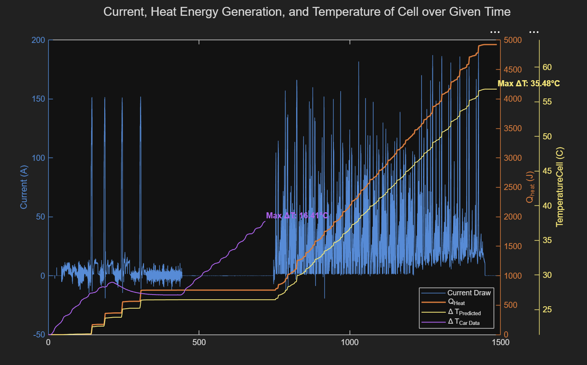
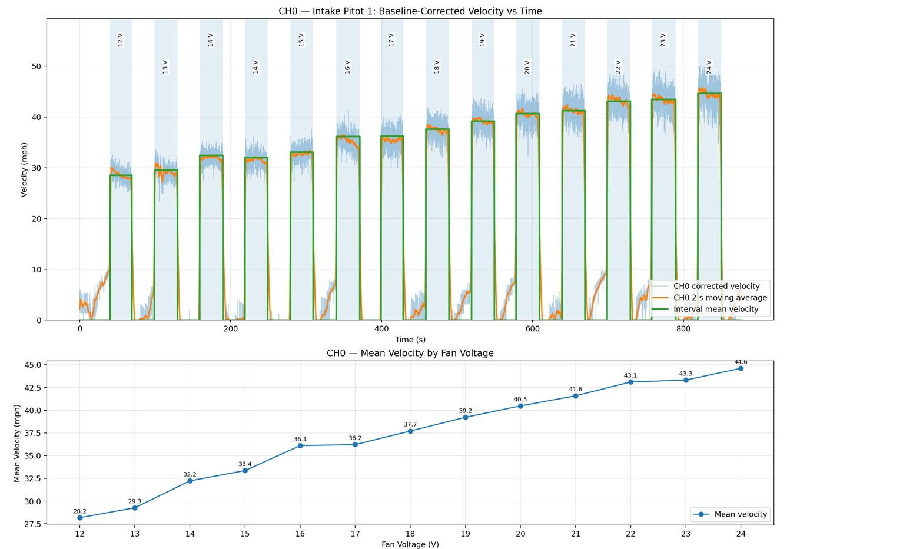

Cooling a 600 V battery pack
On Illini Electric Motorsports, the Formula SAE Electric team at UIUC, I'm the project lead for cooling on our 2027 tractive system battery pack (accumulator). The 600 V pack is laid out in a 138S1P configuration, split into six segments of 23 cells. Air comes in through holes on the sides of the case, passes over all six segments, and gets pulled out by an exhaust manifold. Per FSAE rules and the cell manufacturer's specifications, cell temperatures must stay below 60 °C at all times. My project, which includes building cooling models, creating pressure drop and thermal convection testing procedures, and CAD integration, is what makes staying under that limit possible.
Accumulator CAD is not shown here to keep the 2027 design confidential from other teams ahead of competition.
- Pack
- 138S · 600 V
- Heat load
- 800 W
- Cell limit
- 60 °C
- Airflow requirement
- ~100 CFM at ~63 Pa
Do we need cooling at all?
At the beginning of the design cycle, we needed to justify having a cooling system in the first place. The approach was to take the largest load case the pack would see at competition and 1) determine whether a cooling system was needed to stay under 60 °C during it, then 2) size the cooling system for it. We decided that case was the 22 km endurance event.
Normally, cell temperature change across endurance is easy to measure: just pull driving data from competition. This year, though, we discovered that our cell thermistor circuits had been set up incorrectly, so that data was unusable.
To characterize cell thermal behavior during endurance stints instead, I developed a transient thermal model of a single cell in MATLAB. It takes a current profile directly from vehicle driving data and calculates heat generation as the sum of ohmic heating, from the cell's internal resistance as a function of state of charge (SOC), and reversible entropic heating.

Because a 22 km track is hard to replicate for testing, our team runs half-endurance (11 km) stints instead. Even in those, cell temperatures shot above 80 °C. For further validation, I pulled FSAE Energy Meter current profiles from other teams running similar powertrains, and found that even with power limiting during endurance, our cells would easily pass 100 °C without cooling. This model became the starting point for sizing the cooling system.
Cooling model
The cooling model itself is a steady-state energy balance. It takes the 800 W pack heat load derived from our lap time simulator (LapSim) and assumes the cells sit at 55 °C, which leaves some margin below the 60 °C limit. It focuses on the last row of cells because that's the worst case: by the time the air gets there, it has picked up heat from every row in front of it. At our design point the air warms up about 15 °C on the way through, so the last row only gets about a 10 °C difference to work with instead of 25 °C at the inlet. That was the biggest thing driving the airflow number up. The model ended up needing about 14 mph through the pack, or about 100 CFM, with a 1.2 safety factor.
Measuring heat transfer
I didn't want to trust textbook correlations for a pack this tightly packed, so I measured the heat transfer myself. I built a mock column of the accumulator with the segment walls and cell tabs, heated the cells by discharging them, and ran five tests at different fan speeds. From the temperatures I backed out how much heat each cell sheds per degree, then fit that to air speed. I also had to decide what to do outside the speeds I tested, since the curve fit gets unreliable there, so the model holds the value flat above the tested range and drops it linearly toward zero below it.
Measuring pressure loss
For accumulator pressure drop, I built a pitot-tube rig with five differential pressure sensors on an Arduino, running through an I²C multiplexer, and swept fan voltage to measure airflow and static pressure inside the case. From the data I fit a loss coefficient for the pack, then added hand-calculated losses for the inlet and exhaust meshes and for the air speeding up into the fans.

Fans
Then I wrote a fan model. Fan datasheets list max airflow at zero pressure, which isn't useful, because the pack pushes back harder the more air you move. My script finds where each fan's pressure curve crosses the pack's curve, which gives the airflow you actually get, and it shows why adding fans has diminishing returns. I pulled fan curves from the DigiKey catalog, reading points off the graphs, and ran every fan I could find through it. I chose two 60 × 38 mm San Ace 9GA0624P1J03 fans, which deliver about 111 CFM at 36 W, roughly 14 Wh over an endurance run, well within our LV budget.
| Fan | Size (mm) | V | Qty | Total CFM | Static Pa | Total W | MOS |
|---|---|---|---|---|---|---|---|
| San Ace 9WPA0824P4G001 | 80×25 | 24 | 2 | 114.8 | 84.1 | 17.3 | 0.15 |
| San Ace 9LG0624P4S001 | 60×25 | 24 | 3 | 110.4 | 76.4 | 24.5 | 0.11 |
| San Ace 9G0624P4S001 | 60×25 | 24 | 3 | 120.6 | 91.1 | 24.5 | 0.21 |
| San Ace 9WPA0624P4G001 | 60×25 | 24 | 3 | 129.6 | 105.3 | 33.1 | 0.30 |
| San Ace 9GA0624P1J03 Selected | 60×38 | 24 | 2 | 111.4 | 83.6 | 36.0 | 0.11 |
| San Ace 9GV0624P1G03 | 60×38 | 24 | 2 | 138.9 | 130.1 | 67.2 | 0.39 |
| San Ace 9HVA0812P1G001 | 80×38 | 12 | 2 | 209.3 | 279.6 | 84.0 | 1.10 |
| San Ace 9HVB0812P1G001 | 80×38 | 12 | 2 | 225.0 | 323.1 | 115.2 | 1.25 |
Next
Right now I'm building an ANSYS Fluent CFD model of the whole cooling path, including the monocoque and the exhaust, to check my hand-calculated pressure losses and design the inlet. Part of it is also just for fun.